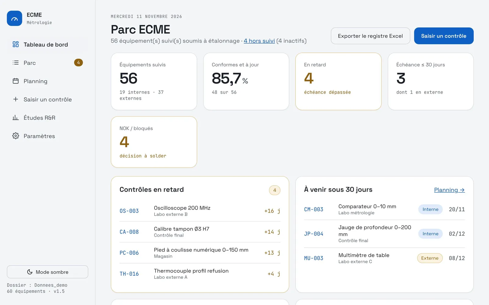
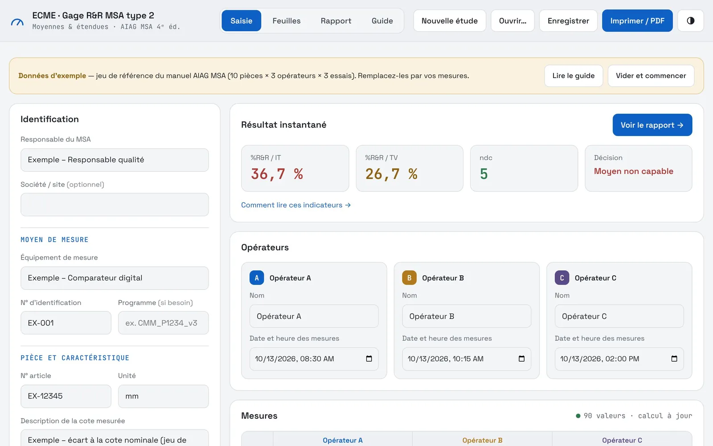

Yassine Kaabar
6 ans en qualité dans l'industrie électronique, en environnement exigeant (ISO 13485). Je conçois aussi mes propres outils : des applications web qui simplifient la qualité au quotidien, de l'atelier aux fournisseurs.
Formation et compétences
Formation
- Mastère Spécialisé® Management QSEQualité, sécurité, environnement
- Master Ingénierie de l'environnementHSE
Langues
- Françaislangue maternelle
- AnglaisTOEIC 985/990
- Allemandnotions
Compétences
- Systèmes de management ISO 13485, 9001, 14001 et 45001
- Audit interne et audit fournisseur
- Team leader 8D et CAPA
- Management des fournisseurs
- Qualification de nouveaux produits : APQP, PPAP, FAI
- Amélioration continue
- Métrologie : programmation MMT, Keyence IM et LM
- Maîtrise statistique des procédés et capabilités
- Conception d'outils numériques pour la qualité
Des outils nés du terrain
Chaque application remplace une tâche que je faisais à la main. Elles tiennent chacune dans un seul fichier, s'ouvrent dans le navigateur et enregistrent les données dans un dossier partagé : rien à installer, aucun serveur.
SPC
Cartes de contrôle et capabilités à partir des mesures machine, écran opérateur avec arrêt production.
SCAR et 8D
Réclamations fournisseurs, suivi des 8D étape par étape, PPM et évaluation fournisseurs.

OQC
Contrôle final par lot selon l'ISO 2859-1, taux de rejet, non-conformités.

ECME
Registre des équipements de mesure, échéances d'étalonnage, planning.

Gage R&R
Étude MSA type 2 avec verdict instantané et guide de la méthode.
Un poste en qualité à pourvoir ?
Je vous présente volontiers ces outils plus en détail, code compris.